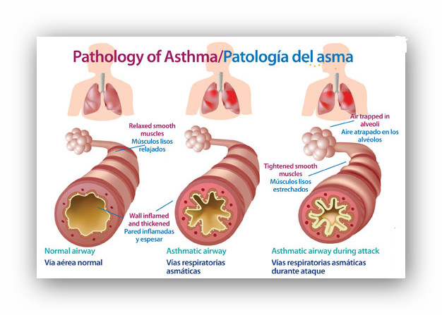

ASMA
El asma es una enfermedad que afecta los pulmones. Es una de las enfermedades de duración prolongada más comunes en los niños, aunque los adultos también pueden padecerla. El asma causa sibilancias, dificultad para respirar, opresión en el pecho y tos durante la noche o temprano por la mañana. Si usted tiene asma, tendrá la enfermedad todo el tiempo, pero sufrirá ataques solamente cuando algo afecte sus pulmones.
No conocemos todas las cosas que pueden causar el asma, pero sí sabemos que se han vinculado factores genéticos, ambientales y ocupacionales a la aparición del asma.
Si un familiar directo tiene asma, usted tiene más probabilidades de presentarla. La “atopia”, la tendencia genética de presentar una enfermedad alérgica, puede tener un papel significativo en la aparición del asma alérgica. Sin embargo, no todos los casos de asma son casos de asma alérgica.
SINTOMAS
Los síntomas del asma varían según la persona. Es posible que tengas ataques de asma con poca frecuencia, síntomas solamente en ciertos momentos, como cuando haces ejercicio, o síntomas en todo momento.
Los signos y síntomas del asma comprenden:
- Falta de aire
- Dolor u opresión del pecho
- Sibilancias al exhalar, que es un signo común de asma en los niños
- Problemas para dormir causados por falta de aliento, tos o sibilancia al respirar
- Tos o sibilancia al respirar que empeora con un virus respiratorio, como un resfriado o gripe
Los signos que indican que probablemente el asma esté empeorando comprenden:
- Signos y síntomas del asma que son más frecuentes y molestos
- Dificultad creciente para respirar, medida con un dispositivo utilizado para comprobar el funcionamiento de los pulmones (medidor de flujo espiratorio)
- Necesidad de usar un inhalador de alivio rápido con mayor frecuencia Para algunas personas, los signos y síntomas del asma se exacerban en ciertas situaciones:
- Asma provocada por el ejercicio, que puede empeorar con el aire frío y seco Asma ocupacional, desencadenada por irritantes en el lugar de trabajo, como vapores químicos, gases o polvo
- El asma inducida por la alergia, desencadenada por sustancias transportadas por el aire, como el polen, esporas de moho, residuos de cucarachas, o partículas de piel y saliva seca derramada por los animales domésticos (caspa de mascotas)